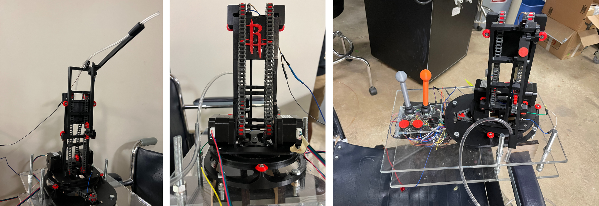
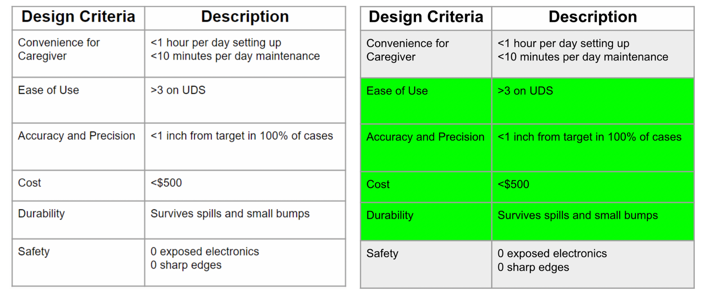
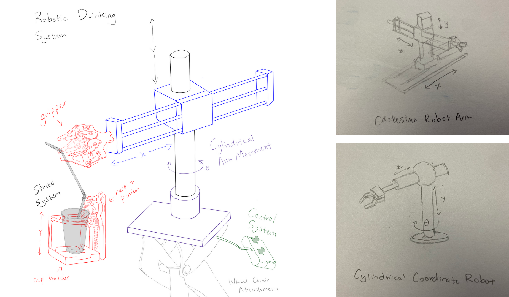

Introduction
Our client is Gary, a young man in the Houston area with Cerebral Palsy. Our team seeks to assist Gary in drinking more independently with a wheelchair attachment that facilitates drinking. A successful device allows Gary to drink with less assistance and will help provide greater independence to people with a range of physical disabilities. This project is important because a solution would help our client Gary feel more independent and comfortable dining outside with his friends and family. Designated Drinker's solution to this problem is to design a cylindrical robot that brings a straw to Gary's face and is controlled by a simple joystick system he is accustomed to, providing Gary with an easy-to-use system that increases his independence.

Design Criteria
Our design criteria include cost, ease of use (caregiver), ease of use (Gary), level of independence, durability, safety, and accuracy/precision.
Design Selection
We decided on building a robotic arm that works in cylindrical coordinates and moves a flexible straw from the drink at the base to Gary's mouth. We found that this design met our design criteria the best overall and was reasonable to build given our skills and the time frame. We considered other types of robotic arms, moving the drink itself to his mouth, and even just using a flexible straw without any robotics, but we determined the arm would be the easiest to use for both Gary and his caregiver as well as be the most accurate/precise solution. Gary wanted a solution that he could control by himself after initial setup, so we decided a robotics solution with easy-to-use joysticks and buttons would work best for him and result in the highest level of independence score. From there, we just had to decide which type of robotic arm to build; we chose a robot in cylindrical coordinates because it would stow the most easily and get out of his way faster. Charlie L also had experience with designing robots in this system, and since he was leading the arm design, it made the learning curve the least steep and gave us a prototype we could start testing faster.
Mechanical Design
Our design for the main arm structure incorporates almost exclusively 3D printed components printed on Charlie L's 3D printer and the OEDK 3D print farm. It is inspired by the basic design for a continuous elevator, a popular cable lift scheme that allows us to use a chain to extend a telescoping lift structure to multiple times its original size.
In order to move the rotating four-bar mechanism on the end of the arm, we also have a parallel set of chain that runs in the same arrangement as the lift chain, but is instead fixed to the rotating element at the ends instead of the carriage. This cable arrangement will allow us to rotate the end effector with a stepper motor fixed at the base instead of adding a heavy servo or stepper motor to the actual lifter arm. This saves weight on the part of the robot that moves, therefore allowing us to use less powerful motors to lift the arm, move the arm faster, and decouple all the heavy electronic components from the moving parts of the arm.
The base of the arm will be secured to the arm of the wheelchair via velcro attachment to facilitate the installation and removal process. The base will serve as the area where all motor components will be strategically placed to reduce weight on the arm. The base of the arm will have a cup holder to fix the placement of the cup and reduce the chances of the cup spilling while the device is moving. The structure will have a soft overall layer that will hide wiring and any sharp edges.
The final design for the arm will consist mostly of 3D-printed components that we can rapidly upgrade and iterate on alongside standard metal fasteners, brackets, and bearings for load-bearing applications.
Electronics Design, Electronics Schematics and Software Design
Electrical Components
For the Electrical components, we are planning to use an Arduino Uno and Usongshine Stepper motors. Additional components include an Input/Output Expansion Board and Stepper Motor Drivers to be able to connect all the stepper motors to the Arduino Uno board. We will also use this current sensor for translating the current into the amount of current flowing through the conductor.
Control System
For the control system, we plan to incorporate two 5PCS XY Dual-axis joystick modules that are compatible with Arduino. One joystick module will control two stepper motors on the X and Y axises respectively and the other will control an additional motor. The joystick movements and movement feedback will be coded in the Arduino IDE. We also plan to 3d print a larger joystick handle that offers better control on an electric wheelchair and is easier to move.
Software Design
For the software design our team is planning to use the Arduino IDE to set up the motor driver and joystick ports on the Arduino Uno board and code joystick movement to motor movement. This is detailed in the flowchart. The force sensor referenced in the flowchart is the joystick.
Optimization
After conducting initial testing, the structural arm experienced fitting issues with the selected gears. The printed gears did not fit into the stepper shaft nor into the space in the center of the arm designed to hold the structure. This was addressed by adjusting the print size and dimensions of the gears.
Later on, the chain tension did not hold when the arm raised up to its maximum height. This was because the path the taught chain took did not have the same length ratio along the entire length of it. We fixed this by adding the extra idler pulleys capturing the rotating four bar, which let the chain follow the same path as the x-axis chain and kept tension constant.
After initial debugging, the main problem with the save position code was that it was not moving the motors completely to saved positions because the code was updating the x,y, and z values in the same loops. This ended up also affecting the regular movement of the rest of the motors since the position was not accurate. To address this issue, the team created new variables outside of the for loops for the position values for the limit of how many times to increment the motor movement within the for loops to prevent actual position interference.
After initial testing, the arm base held the issue that the bolts had no way to tighten using a singular nut. This came from design oversight since tightening the bolt would prove useless if the bolt was not clamping both pieces of wood. To combat this, the design was modified to have the top of the bolt and a nut secure the bottom piece of wood and two nuts to secure the top piece of wood. All while using the same bolt.
Testing
Test 1 (Ease of Use - Caregiver): Each member of the team takes a turn setting up the device. The setup times are averaged and multiplied by three in order to determine the average amount of time the caregiver will spend setting up the device each day. Each team member will then wash the straw and valve. The setup and cleaning times are summed to form an average daily time for the caregiver. This test is passed if the average daily time is below 1 hour.
Test 2 (Ease of Use - Gary): Gary will use the device and rate its ease of use on a simple UDS. The test is passed if the device scores greater than or equal to a 4 on the UDS.
Test 3 (Accuracy and Precision): A team member will save the location of the straw in the drinking position. We will move the straw away, then use the button to automatically return the straw to its saved position. We will then measure the number of adjustments needed to get the straw back to the same location of an area no larger than 5 square inches. The test is passed if 0 adjustments are needed for the straw to return to the same location.
Test 4 (Cost): The price of each component on the spreadsheet will be summed. This test is passed if the total cost of our final device is below $500.
Test 5 (Durability): The device will have a bucket of water dumped on it. The test is passed if the device remains fully functional after being dried.
Future Steps:
Wheelchair attachment
Regarding the wheelchair attachment, the client mentioned that he would like this device to be able to swing onto his wheelchair table from the side like his current wheelchair controller does. For future steps, we will investigate this swivel wheelchair attachment and how to implement it into our design.
Stepper motors
In the future, our team could use smaller stepper motors that weigh less and don’t require as much power. Smaller motors would integrate into the current design better and cause the product to weigh less overall, but is not a huge priority currently.
Battery
The current battery and battery container could be reduced in size in the future to fit better into the client’s wheelchair. It could also be implemented to be more secure in position for the future and have an acrylic case enveloping all the electronics.
Wire Management
For future improvements, we could look into how to reduce wiring and improve wire management so that the limit switch wiring is not visible to the users. The X and Y axis wiring could be adjusted to make sure there is no possibility of the wires being tangled in the future, but there is a low chance of it being tangled currently.
Summary
The goal of this project was to provide a client the ability to independently drink in a casual setting. The utter importance of being able to perform such critical daily tasks motivated our team to provide the most ideal product possible for our client. Current solutions such as the Obi robot provide too much of a financial burden on people who need the device and common solutions such as being assisted by another person do not provide the satisfaction of independence to users. Our team aimed to design a solution that would be affordable and provide users the ability to independently drink without the assistance of another human being.
Our device consists of a robotic arm, a cup holder, a one way drinking straw, a control system, and a mountain base. The robotic arm guides the straw from the cup in the holder to the user’s mouth. This arm has the ability to move in three degrees of freedom to target a large area across the front of the user. This straw only allows drinks to flow one way to reduce the effort that the user has to put in to drink.
This robotic arm is controlled by a simple control system consisting of an on/off switch, a save button, a return button, and two joysticks. The on/off switch powers the device on and off. The save button allows the user to save a certain position of the arm. The return button allows the user to return to the position that was saved using the save button. Both joysticks allow for rotation of the base, elevation of the arm, and rotation of the arm. The entire system is located on top of a currently wooden mounting plate, which is adaptable to multiple wheelchair arm thickness. The mounting plate uses four large bolts to secure the entire device onto the arm of the chair to provide stability and accessibility.